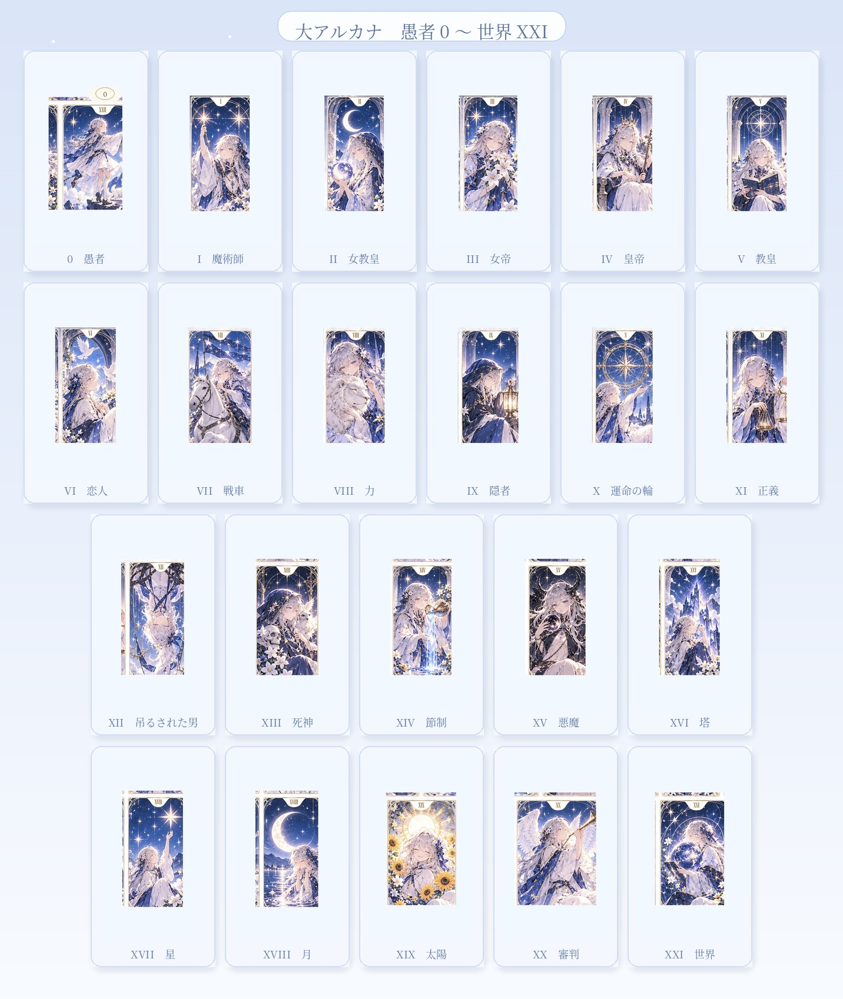

✧ Stella公式占いサイト
タロットの絵札
愚者
0
から世界
XXI
まで。
月の気配に照らされた二十二枚を、静かに眺められる小さな絵札の間です。

☾ タロット1枚引きへ戻る
占いとの付き合い方・利用案内
0
愚者
I
魔術師
II
女教皇
III
女帝
IV
皇帝
V
教皇
VI
恋人
VII
戦車
VIII
力
IX
隠者
X
運命の輪
XI
正義
XII
吊るされた男
XIII
死神
XIV
節制
XV
悪魔
XVI
塔
XVII
星
XVIII
月
XIX
太陽
XX
審判
XXI
世界
どの絵札も、今のあなたに必要なことを決めつけるものではありません。心に残る一枚があれば、その静かな気配だけを、やさしく受け取ってみてください。
© Stella · 星の観測所